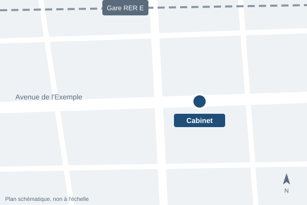

Dr Jean Martin
Médecin généraliste – Rosny-sous-Bois
Conventionné secteur 1 · Carte Vitale acceptée · Tiers payant selon la réglementation en vigueur
Prendre RDV sur DoctolibPrésentation
Le Dr Jean Martin exerce la médecine générale à Rosny-sous-Bois. Le cabinet assure les consultations de médecine générale pour adultes et enfants, le suivi en tant que médecin traitant, la vaccination et les certificats médicaux.
- Qualification : Médecin qualifié en médecine générale
- Inscription : Ordre des médecins de Seine-Saint-Denis
- N° RPPS : 00000000000 (fictif)
- Langues parlées : français, anglais
- Accessibilité : cabinet au rez-de-chaussée, accessible aux personnes à mobilité réduite
Honoraires
Médecin conventionné secteur 1 : les tarifs appliqués sont ceux fixés par la convention avec l'Assurance Maladie. Le détail des honoraires est affiché dans la salle d'attente, conformément à la réglementation.
Horaires
Consultations sur rendez-vous uniquement.
| Lundi | 8h30 – 12h30 · 14h00 – 19h00 |
|---|---|
| Mardi | 8h30 – 12h30 · 14h00 – 19h00 |
| Mercredi | 8h30 – 12h30 |
| Jeudi | 8h30 – 12h30 · 14h00 – 19h00 |
| Vendredi | 8h30 – 12h30 · 14h00 – 18h00 |
| Samedi | 9h00 – 12h00 |
| Dimanche | Fermé |
En cas d'urgence, appelez le 15 (SAMU) ou le 112.
En dehors des heures d'ouverture, contactez la permanence des soins en composant le 116 117.
Adresse et accès
12 avenue de l'Exemple
93110 Rosny-sous-Bois
Tél. : 01 00 00 00 00 (fictif)
Transports : RER E – gare de Rosny-Bois-Perrier ; plusieurs lignes de bus à proximité.

Prendre rendez-vous
Les rendez-vous se prennent en ligne ou par téléphone aux heures d'ouverture.
Prendre RDV sur DoctolibMerci de prévenir le cabinet en cas d'empêchement.
Ce site ne permet pas d'échanger d'informations médicales.